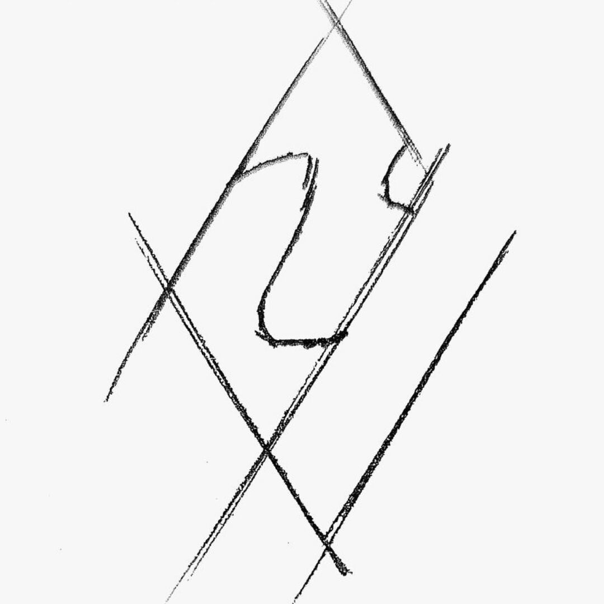

工作站网络中控
帮助
Admin
个人中心
设置
ဆ
注销
主面板
文件服务器
Media服务器
基础概况
远程管理
运行信息
数据统计
Notes服务器
基础概况
远程管理
运行信息
数据统计
Source服务器
基础概况
远程管理
运行信息
数据统计
Desing数据库
基础概况
远程管理
运行信息
数据统计
Develop服务器
基础概况
远程管理
运行信息
数据统计
存储池
基础概况
远程管理
硬盘健康
请求效率
数据统计
超算中心
超级计算机1
运行概况
远程管理
运算信息
命令行窗口
超级计算机2
运行概况
远程管理
运算信息
命令行窗口
智能生态系统
所有系统
待确认订单
全部订单
生活计划
基础计划
临时计划
智能活动
生态与自然
I am系统3.0
生活方式
内外网系统
总管理面板
入户宽带
运行总述
交换速率管理
运营商信息
运营商信息
中国电信
中国移动
中国联通
卫星通讯系统
其他输入方式
工作模式
系统管理
系统设置
插件设置
URL设置
系统日志
内网管理
内网软路由
内网电缆路由
内网光缆路由
URL设置
角色管理
管理日志
网络安全
内网安全
交换监控
访问记录
防火墙设置
防火墙总控
防火墙TAB
隔离日志
数据交换监控
内外网策略